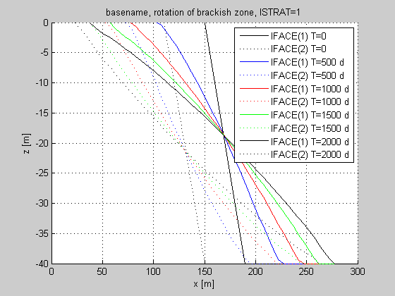

Contents
load name
load(basename);
[xGr,yGr,zGr,xm]=modelsize3(xGr,yGr,zGr);
[NROW,NCOL,NLAY]=size(IBOUND);
H =readDat([basename,'.HDS']);
ZTA=readBud([basename,'.ZTA']);
NT =length(ZTA);
NSURF=length(ZTA(1).label);
[MFnams,MFvals]=getExcelData([basename,'.xls'],'MFLOW','Vertical');
ISTRAT=MFvals(index('ISTRAT',MFnams),1);
Reading dat file swiex2.HDS, which contains the following information:
Number of stress periods: 1
Number of time steps : 1000
Number of layers : 1
Number of rows : 1
Number of columns : 60
iRec= 1 iR= 1 iPer= 1, iStp250, pertim= 500, totim= 500 Layers= 11
iRec= 2 iR= 2 iPer= 1, iStp500, pertim= 1000, totim= 1000 Layers= 11
iRec= 3 iR= 3 iPer= 1, iStp750, pertim= 1500, totim= 1500 Layers= 11
iRec= 4 iR= 4 iPer= 1, iStp1000, pertim= 2000, totim= 2000 Layers= 11
Trying to read swiex2.ZTA as BINARY file...worked!
Reading budget file swiex2.ZTA, which contains the following information:
The following 2 budget term labels were in the file:
ZETAPLANE1
ZETAPLANE2
Stress periods : 1
Time steps : 250 500 750 1000
Number of layers : 1
Number of rows : 1
Number of columns : 60
Label(iPer= 1,iTstp=250) =ZETAPLANE1
Label(iPer= 1,iTstp=250) =ZETAPLANE2
Label(iPer= 1,iTstp=500) =ZETAPLANE1
Label(iPer= 1,iTstp=500) =ZETAPLANE2
Label(iPer= 1,iTstp=750) =ZETAPLANE1
Label(iPer= 1,iTstp=750) =ZETAPLANE2
Label(iPer= 1,iTstp=1000) =ZETAPLANE1
Label(iPer= 1,iTstp=1000) =ZETAPLANE2
Figure of rotating interface
figure; hold on
xlabel('x [m]'); ylabel('z [m]'); grid on;
title(sprintf('basename, rotation of brackish zone, ISTRAT=%d',ISTRAT));
set(gca,'xlim',xGr([1 end]),'ylim',sort(zGr([1 end])));
leg{NT}=' ';
clr='brgkcmy'; clr=repmat(clr,1,ceil(NT/length(clr)));
stl='-:;.'; stl=repmat(stl,1,ceil(NSURF/length(stl)));
k=1;
for iSurf=1:length(ZTA(1).label)
plot(ZETA(iSurf).x,ZETA(iSurf).z,['k' stl(iSurf)]);
leg{k}=sprintf('IFACE(%d) T=0',iSurf);
k=k+1;
end
for it=1:NT
for iSurf=1:length(ZTA(1).label)
idx=strmatch(sprintf('ZETAPLANE%d',iSurf'),ZTA(it).label);
for iLay=1:NLAY
plot(xm,squeeze(ZTA(it).term{idx}(1,:,iLay)),[clr(it) stl(iSurf)]);
leg{k}=sprintf('IFACE(%d) T=%.0f d',iSurf,H(it).totim);
k=k+1;
end
end
end
legend(leg);
